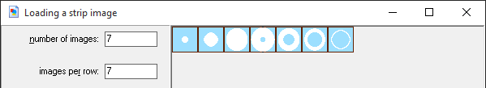

Design Principles and Game Programming
Written and developed by CU Game Dev, with support from ADI.
This guide will guide you through making two simple games. One will be a top-down shooter style game that will help you become familiar with GameMaker and with the concept of a minimum viable product. Afterwards, you will be guided on making a more complex platformer-style game, building upon what we have learned previously.
You must first download and install GameMaker. For Windows users, download from here here, and for Mac, download the Lite edition from here.
The top-down shooter will assume no coding knowledge at all to try to introduce all the basic features of GM as an engine for learning game development. For the platformer, coding knowledge will be a major plus as we dive deeper into the capabilities of the program.
Also, download the resource pack, which has sounds and graphical assets to use in your game, as well as project checkpoints to compare against as you go through this tutorial.
Goal - Learn about common game development tools, basics game programming concepts, and minimum viable products is.
In this first section, we'll speak a little about getting into a game development mindset, mention a few considerations when making a game, and introduce a bunch of tools that studios and individuals use in making a game.
If you're interested in making a game, you must have played a few games here and there. As you know, there isn't a definitive definition of what a "good" game is. A game that you think is amazing might be so-so to your friend, and vice versa. However, there are certain points of games that make them stand out from the crowd. Games that allow a player as much freedom as possible, within the rules of the game, is something that allows a game to shine. These rules, or the mechanics of the game, are essentially the rules of the world that you are creating will follow. Think about how in the real world, gravity keeps us on the ground, people need to eat food to survive, or that the day has 24 hours.
So, since you're interested in making games, let's think of a few things to consider before we delve into the world of creating them!
There are a few things to consider before diving headfirst into making your game. Depending on the size and scope of your game, your project can either be something you can make in a day to something that takes a year, or even longer! Thinking about the size of your game, as well as the complexity of it, can help you and your group plan out your steps when making your project.
Another important point to focus on is the core mechanic of your game. If you had to remove all of the extras from your game, such as power-ups, levels, story, characters, what would your game be? How will it play? And is that something that you can create for the platform you wish to build it for?
This tutorial will go through the steps of creating games that are pretty simple and uncomplicated. However, although most games today are more complex, many still use these basic underlying designs and mechanics. We will explain later what an MVP is, but this is something that will help you greatly when developing a finished product.
There are many ways to develop games. Some games arise out of a story that compels people to tell it. Others grow out of a gameplay feature that happens to be fun. In this lesson, we'll focus on developing a game with this latter approach: developing a mechanic and expanding on the game from that.
A game is a piece of software, so programming patterns and concepts from other types of software are also common in games. However, a game in particular is a special type of program: a sort of simulation of a set of rules for the game universe. Because of this, the code structure for a game typically follows two patterns:
In a game, the core of the logic is contained in a loop running indefinitely, with each run of the loop simulating a number of steps of the game universe, followed by a render of the universe, and then a delay keeps the simulation running at a reasonable speed (e.g., 60fps).
Most games involve entities, like players, enemies, or powerups, interacting with each other. To capture this, game engines typically divide game logic into packages called objects, each of which, in each step of the game universe, has its own behavior.
Depending on the game you want to make, the variety of programming, math, and physics concepts you might need to incorporate are endless, from pathfinding to gravity to finite state machines. The two key concepts that games use, though, are the game loop and update method. It's not that important to know exactly what they mean at this point, but try to keep these two ideas in the back of your mind as we see how Game Maker games are structured following this system.
A Minimum Viable Product (henceforth 'MVP') is a bare bones version of your game. This is a stage where there will be no art or music in your game and usually the game will consist of one level or room of your game.
This is used mainly in testing purposes to see if your mechanic works as intended. By having an MVP, you can work out any bugs, allow others to test your game's mechanic, and start tweaking things to your liking.
Game developers use a plethora of tools for every component of the development process, from audio to visuals to 3D models to overall frameworks. Below are some tools popular in the industry, whether used by small indie studios to large triple-A producers.
Here's a list of some of the game engines that are frequently used:
The list goes on. Construct 2 is similar to GameMaker for web-based 2D games, while other more minimal frameworks like LÖVE and Phaser are also popular.
Triple-A studios often have professional software for making visual and audio assets, like Autodesk Maya, Cubase, and Adobe Illustrator. For the more humble developers like us, a set of free software is available:
A more complete list can be found here.
We'll be using GameMaker for the games we make in this guide.
GM Studio on Windows is a great tool for development, with its frequent updates and cross-platform support. The built-in features it provides is good for getting rid of all the configuration and preprocessing needed to work in many other game engines, so it's fast to get a working prototype up. The model GM uses tries to be as simple as possible for non-programmers, too, and the learning curve is smooth, making it ideal for beginners.
It's a powerful program too, with a sizeable list of notable indie games built with it, like Hotline Miami, Spelunky, and Undertale.
GM for Mac, however, is based off an older version of GameMaker, so its functionality is limited. The game model and interface is nearly identical, though, so it's still a good way to learn the workings of game development and testing prototypes. It's worth using a different game engine or working on Windows for developing final products, though.
In GameMaker, a game is made up of various parts. Here we'll describe each part and their function on a very basic level before we move on to using them when making our basic game.
Some more specific resources that we won't be getting into include:
Now that we know some basic concepts of game programming and what an MVP is, let's review by having you perform a little exercise.
For this exercise, think of a game you want to make. Anything you want! You can either write out what you want to make or draw a diagram.
After you've done that, try to boil down your game into its core mechanic. Make it as simple as possible. This will be your MVP! Now, compare the MVP with your "final" product and see the differences between them.
Once you're done with these levels, you should be able to create your MVP in GameMaker.
Goal - Create a basic game and get familiar with GameMaker.
We'll be building a quick top-down shooter in GameMaker, and with the goal of seeing the features of GameMaker that combine game assets with logic to create a game. What features and commands does GameMaker have, and how are they organized in a GameMaker game? The shooter we make will be extremely basic, with enemies slowly coming down to the player's level. You can move horizontally and shoot upwards.
For Windows, when you first open GM Studio, you should see a window similar to the one in the screenshot below.
Navigate to the "New" tab and select a location to put all the files related to the game we'll be making. GM studio projects are folders with extension .gmx, containing a main project file with an extension .project.gmx, and several subfolders for the game's resources. In addition it's possible to export and send the entire project as a single compressed .gmz file (File > Export Project in the next window).
Once you select a name and location for your project, a window like the one below should pop up. Something similar to the window below should be the first window you see on Mac, after the little popup asking you to buy the full version. If GM asks if you want to enable advanced mode, answer yes.
The two types of assets—graphics and audio—are grouped into the first 3 folders on the left. As intuitive as the interface is (or tries to be), we'll give a quick walkthrough of adding sprites, sounds, and backgrounds to a project.
In this section, we'll focus on creating and adding assets to our game.
To create a sprite, either click the pac-man icon () in the top menu, or right-click the Sprites folder and select new sprite. The Sprite Properties window shows up.
Name the sprite something appropriate, like sPlayer, for a player sprite. To modify the actual graphic of the sprite, you can choose to load a premade image or edit the sprite yourself and click the appropriate button. We've provided sample sprites with the tutorial that you can load. If you prefer to make your own, click "Edit Sprite" to open up the Sprite Editor and click "New Sprite". Specify the dimensions, and double-click the "image 0" that's appeared in the sprite editor to open up the Image Editor and start drawing. After you load the image or draw your own, your Sprite Editor should look something like what's shown below.
Mac Users
The sprite editor is slightly different, with the menu at the top of the screen instead of attached to the window. Furthermore, "New..." doesn't actually reset the sprite and create a new one, but instead adds a subimage which we'll get into later. If you click New... and specify a size you might end up with something like this, with an Image 0 and Image 1. We don't want that at this point. The top menu allows you to delete subimages as well as resize your sprite.
Save and close the editor and properties window—you're done with this sprite. Try to add another sprite to represent the player's bullets! A graphic is provided.
A background is similar. Create a background resource (right-click the folder or click ) and try to navigate the program to load our provided background or draw your own backdrop for our ultimate space battle. Bonus points if it tiles!
Mac Users
Sprites and backgrounds in Mac have limited transparency capabilities. If you want sprites that aren't opaque over the entire rectangle of the sprite, make sure you tick "Transparent". The way GM for Mac determines which pixels are transparent is by looking at the bottom-left pixel. The transparent color will be set to whatever color's in the bottom-left.
Sidenote
In my opinion, GM's Image Editor is reasonably powerful but some things are hard to find, like resizing the canvas. (Resizing is particularly annoying because sprites can actually contain multiple subimages of the same size, to be used in e.g., animation, or different states of an object, like a stoplight with different images corresponding to different lights on.) For professional pixel art, consider drawing in GraphicsGale or Aseprite and then loading.
The remaining options (origin, collision, texture) in the sprite properties dialog box have to do with how the rest of the game renders and interacts with objects with this sprite. We'll get into some of them later.
We've provided a sample shooting sound effect made in bfxr, and loading that as a resource is as simple as for the sprite. Creating a sound resource is a matter of navigating the interface. (Right-click the folder, or click ) For our purposes, just loading the sound and naming it properly (e.g., sShoot) is enough. The other settings don't need to be changed.
Sidenote
One thing you might notice is that Game Maker provides a lot of options and settings to tweak for each resource. This is just because Game Maker has a lot of built-in functionality for common game use-cases, which is partly why prototyping can be really fast with GM. We avoid these settings for now as we have no use for them, but the help manual goes into them pretty well if you're interested.
In addition, many settings shown in the screenshots might not be available in GM for Mac. In that case, don't worry. If we don't mention it in the text, the settings aren't changed, and the default functionality in GM for Mac is good enough.
The main actors in GameMaker games are objects, which combine a sprite with game logic that is run on every step of the simulation. Objects are then placed in things called Rooms, which serve as an environment for objects to interact with each other and you in a game.
To see how this system works, let's create a player that can move around. First, create a new object resource (right-click the folder and select, or click ) and name it something appropriate, like oPlayer. Underneath the name, set the sprite to sPlayer.
)
Then, create a room resource. In the Objects tab of the Room Properties window, select oPlayer, then click somewhere in the grid to place the player in the room (you can change the size of the grid with the SnapX and SnapY values at the top of the window). Then, in the settings tab, name the room rGame, change the width and height to 320x480, and FPS to 60.
Now that the room's been added, the game is minimally functional. In the main window menu, click the green triangle () to test the game out. Your object will be there, motionless.
You can download the GM project with everything up to this step here for Windows, or here for Mac.
To implement motion, we can use Game Maker's built-in event-action functionality. Game Maker lets us program game logic into these objects by adding statements of the form, when [EVENT], do [ACTIONS], like when <spacebar> is pressed, shoot a bullet and play a sound or in this case, when <left> is pressed, move left.
To see how GameMaker provides this, in the Object Properties window of your player, click "Add Event" at the bottom, select "Keyboard" (not Keyboard press), and then "Left". A "press x to -3 and y to 0, and ticking relative, to finish the statement with a "jump to your left 3 pixels."
Sidenote 1
Underneath the hood, GM is adding a piece of logic to the game's programming that checks if the left button is down at a particular instant and moves the player left if it is. This check isn't truly continuous because of the sequential nature of programs, but it's as close to continuous as possible. Specifically, this piece of logic is added to the object's update method, which is run once every time step, or simulation of the game loop, so every frame, the program checks if left is pressed, and moves the player 3 pixels to the left if it is.
This abstraction—of associating a sequence of actions to an event for every object—is relatively powerful because of the wide variety of actions and events to choose from, but also easy to work with for people inexperienced with code.
Sidenote 2
Every object has a pair of coordinates
(x, y)representing its position, and GameMaker draws the sprite of the object at that position once every frame. The action we added moves the object(-3, 0)from where it was before, since we ticked relative. If we hadn't ticked relative, the object would teleport to the absolute location(-3, 0)(i.e., a bit to the left of the global origin, or top-left corner of the screen/room), and stay there, as soon as you pressed left. (In the representation below, pressing left would move the ship to(45, 44)the next frame)
If you rerun the game, your player will slide to the left when you hold the left button down. Try to repeat with the other direction to give the player full horizontal mobility.
We can continue using these event-action pairs to make the player shoot bullets, and demonstrate how objects can interact.
First, create an oBullet object and assign the sBullet sprite to the object. In the oBullet object, we add a Create event and add a action to set the vertical speed to -8. This means "when I'm spawned, set my speed to 8 pixels up every frame." Add another event, "Outside Room", and insert a action (accessible from the main1 tab on the right) to remove the bullet once it leaves the screen (so we don't simulate it any more than we need to).
Back in the oPlayer object properties box, add a press
Sidenote
creates a bullet at (12, 0) relative to the player position. The way we've set it up, this means that the bullet we create will be placed such that its top-left corner is 12 pixels to the right of the player's top-left corner (see the figure).
If you're interested in avoiding these ugly numbers, take a look at sprite origins, which are special coordinates for each sprite, editable in the sprite properties window. When GM renders an object at a position (x, y), it draws the object's sprite so that the origin of that sprite is at (x, y). Sprites are created with origins at (0, 0). You can move the origin to the centre of the sprite by clicking "Center" on both the player and bullet sprites. Creating a bullet at (0, 0) relative to the player will then make the centre of the bullet align with the centre of the player, as desired.
(Green x shows origin of both bullet and player, which we now set to the centre of the sprite. Creating a bullet at (0, 0) relative to the player thus aligns the two origins)
The remainder of this shooter will keep sprite origins at (0, 0), but expect to use sprite origins in the next step—the platformer.
You can download the GM project with everything up to this step here for Windows, or here for Mac. .
By this point adding resources should be familiar. Just as we did with the player and its bullets, we can do the same with the enemy: creating a sprite resource, loading/drawing the graphic, and creating an object resource that uses the sprite.
We'll eventually make it so that the game periodically spawns enemies that slowly move down. One way to have the enemies move down is to program the enemies to have a downward speed upon creation: Add Event -> Create, and drag the action to the actions window, with a speed of 0.5 or so.
Sidenote
This is another built-in feature of GM. Just as every object has a position (x, y), every object has a horizontal and vertical speed (hspeed, vspeed), and every frame, the object's position is shifted by the speed. Setting the vertical speed to 1 would make the object move down a pixel every frame. As with position, ticking relative in the action would instead add 1 to the current vertical speed of the object (it doesn't matter here since the object starts out stationary).
Another behavior we might want is to have them disappear upon hitting a player bullet. This can be done with the collision event: In the oEnemy's Object Properties window, click Add Event -> Collision -> oBullet to include the event and drag the action (tab main1) to the actions window. Additionally we might want the bullet to be destroyed too, which we can do by dragging another and set the target to "Other" instead of "Self".
If we go to the room editor and drop enemies into the room, they'll appear and slowly move down, as well as react to our bullets, as expected.
Sidenote
One setting to pay attention to is the Delete Underlying checkbox. If it's checked, whenever you try to place an object on top of another object already placed in the room, the other object will be automatically deleted—which may be inconvenient at times. It's checked by default on Mac.
You can download the GM project with everything up to this step here for Windows, or here for Mac.
GM provides a scripting language to allow for traditional control flow structures, like conditionals and loops, but GM's drag-and-drop action system also has a simplified version for people new to code.
Every object is allowed to have any (reasonable) number of values associated with it, called variables, that store things like numbers, pieces of text, or other objects. Their use is what you'd expect: keeping track of, e.g., an individual's score in an arcade game, or status message in an MMO. We'll use variables to keep track of enemy health, so that 3 hits will destroy an enemy ship instead of just one.
While there's no explicit way to declare what variables you want an object to have up front, it's often a good idea to set, or initialize all of them in the Create event with the action in the control tab. To start the enemy off with 3 health, use to set hp (not health—see below) to 3 in the Create event. Since this is the first mention of the variable hp, it also tells GameMaker that this object has a variable called hp.
Sidenote
GameMaker provides a built-in global variable (i.e., not different for each object) called health for player health. I guess it's there for people new to GM since there's a tab dedicated to these variables (score, health, lives), but they're no different from regular variables. We won't be using these global variables and indeed it's an inconvenience to have these variable names reserved by GM like that.
In the collision with the bullet, we want to decrement hp and now only want to disappear if the health hits 0. To do this, we can to set hp to -1, ticking relative. Then underneath, use a to check if hp is equal to 0, and put the self- action right underneath the condition. The will skip the following action unless the condition is satisfied, so the enemy ship is only destroyed if the health reaches 0.
Sidenote
If you want a conditional item to apply to a block of events, you can use the items to specify how far the block should reach. We'll see an example of bigger conditionals in the explosion section.
You can download the GM project with everything up to this step here for Windows, or here for Mac.
We can do something analogous to the interaction between player bullet and enemy with an enemy bullet. Create a sprite resource for an enemy bullet, load the graphic, and associate it with a newly created object, naming it something like oEnemyBullet. We can program the player so that the game restarts (, main2 tab) upon hitting an enemy bullet (or maybe after losing all its health), and then get the enemy to shoot every three seconds or so.
Perhaps the only vaguely new concept is the idea of an event happening periodically, for which Game Maker also has built-in functionality in the form of alarm events.
Alarms have two parts: an action that sets the alarm () and the event that's triggered when the alarm goes off. Internally, every object has a set of built-in alarm counters. the action sets one of the counters for an alarm. The alarm counter then decrements every step, and when the counter reaches 0, the actions in the alarm event are triggered. For instance, to make an enemy shoot exactly one second after it's spawned, we can use in the Create event to set the enemy's Alarm 0 to 60 (assuming 60 FPS), and in the event Alarm 0, create an enemy bullet.
In our case, to have the enemy fire once every 3 seconds, we can have a action setting Alarm 0 to 180 in both the Create event and the Alarm 0 event, so that when the alarm fires, it also resets itself. In addition, in the Alarm 0 event, we create a bullet, and set the bullet to aim downwards in the bullet's create event.
Sidenote
GameMaker has a bunch of scripting functions you can embed in the properties of your actions so that the engine isn't completely restricted. For instance, we could set Alarm 0 to
150+random(30)to set Alarm 0 to a random number from 150 to 180, instead of 180 every time. The manual included with GM has a reference on all of these functions, but it's more common to ask about or look up a certain desired behavior and learn about how GM accommodates it in an example.
You can download the GM project with everything up to this step here for Windows or here for Mac.
To create a constant stream of enemies for our game, we make an object that doesn't interact with the game at all besides creating enemies every once in a while. This pattern is common in engines where game logic is almost entirely in objects, and normally we call these background objects controller objects and use the prefix c instead of o.
Create a cEnemies (or cEnemySpawner) object without attaching a sprite, with an action in the Create and Alarm 0 event, along with an enemy create action in the Alarm 0 event, to produce enemies periodically.
To put the enemies at random positions, we can set the y to be -32 and x to be irandom(room_width-32), which generates a random integer from 0 to the coordinate of the rightmost side of the room every time it's called. This approximately evenly distributes the enemies.
Mac Users
GM for Mac has no
irandom(...). Instead, usefloor(random(...)).
Finally, put the controller object somewhere in the room. People normally put controllers in the top left, but we programmed this controller so its location doesn't matter. It pops up as a blue question mark, but that's only visible in the room editor.
Sidenote
The reason we set y to -32 is so that the bottom of the enemy are at
y = 0, or the top of the screen, when they're spawned. Similarly,room_width-32is 32 pixels to the left of the right end of the room, so the farthest to the right the spawner can spawn is the position where the right side of the enemy touches the right edge of the room (the farthest to the left isx = 0, where the left end of the enemy touches the left edge of the room).
You can download the GM project with everything up to this step here for Windows or here for Mac.
We have a half-complete prototype for our shooter. Let's polish some of the rough edges to make it a little more presentable.
Unlike sprites, backgrounds aren't associated with objects, but rather with rooms. To add the starry night background to the game room, double-click the game room in the left-menu to open the Room Properties window, and navigate to the backgrounds tab. For Mac, you might have to click an extra button to see it. Tick "Draw background color", "Visible when room starts", and the tiling checkboxes, and choose a color at the top and your background in the dialog box near the bottom. You can scroll down and set the vertical speed to 3 or so to make the background move down.
Sidenote
Backgrounds are modifiable at any time by objects through a set of variables beginning with
background_. Variables can be set using the action, or through a script, which we'll get into for the platformer, which is a step up in programming complexity.
Precisely, sprites aren't just a single picture, but are made up of a set of graphics called subimages (with the same dimensions) along with other properties like a hitbox or an origin. People usually achieve animated graphics using sprites by using multiple subimages and then playing through the subimages.
In the Sprite Editor, one can add an empty subimage at the end of the sequence with the button and then double-click the subimage to edit it. Alternatively, one can load from a strip of subimages, like the one of the explosion we provided. In the Sprite Editor, File -> Create From Strip opens a dialog box that extracts subimages from a sheet of images. Our sprite sheet has 7 images and 7 images per row, with all other settings unchanged. To see how the animation plays out, you can tick the "show preview" checkbox in the Sprite Editor. (Recall for Mac that the menu is at the top of the window)

Using our animated sprite is a matter of making a new object and assigning the explosion sprite to it. When an object has a sprite with multiple subimages, the subimages automatically play (and loop) at whatever FPS the room is set to. Thus, the single behavior to add to the explosion object is a self- when the animation ends, accessible from Add Event -> Other. Other objects like the enemy can create explosion objects in the event of hitting a player bullet.
There are a lot more things that could be done to make the game more presentable, like generating more sounds (e.g., with bfxr) or restricting the player from moving outside of the screen, which can be done by only allowing rightward movement if the player x is less than room_width-32, and only allowing leftward if the player x exceeds 0.
One other thing you may notice is that the game isn't very fun. Try to tweak the game to make it challenging! Make the game restart when an enemy reaches the bottom of the screen, or touches you. Change the enemy bullet pattern, perhaps aiming at the player instead of downwards (use in the bullet Create event, with direction point_direction(x, y, oPlayer.x, oPlayer.y)). Maybe also limit how many bullets there can be on the screen by preventing the player from shooting if there are too many (using in the control tab). Get the enemies to move horizontally too, bouncing against the sides of the room, or add your own gimmick after exploring the actions GameMaker has.
You can download the GM project with everything up to this step here or here for Mac.
Game Maker tries to make it simple to make simple games. Where there isn't a lot of complex logic, programming and gathering the assets is a matter of navigating the menus and specifying what to do at certain events.
GM is powerful too, though, with many layers of complexity underneath. Logical control flow in an object can get complicated too with conditionals and variables to manage. GM also has a scripting language that lets you implement complex behaviors as well as bypass the built-in crutches provided for the beginner.
While it would be a chore to go through the enormous list of functions and actions GM provides, there are many tutorials online for specific behaviors. As you go through examples, you'll naturally pick up and learn how each useful function/action is used in games.
In the next tutorial, we'll go through the scripting capabilities of Game Maker and look at some more general considerations in game programming.
Goal - Learn more about the features of GM, familiarize with the game programming mindset, and make a basic platformer.
In this platformer tutorial we'll take a different approach with GM, instead limiting ourselves to just a few of the built-in features related to resources and coding the rest ourselves, to get a feel for how GameMaker works underneath the event-driven model (and how game engines in general work), and look a bit at some of the problems games programmers face in implementing mechanics.
This section in particular will be a little more math-oriented as we figure out how to get our player to behave and move exactly how we want.
Create and load the player and enemy sprite, as well as the background. Also load the background tileset, checking "Use as tileset" in the background properties. Alternatively, draw your own if you feel brave, but try to keep the poses similar and the image dimensions 16x16. In addition, create a 16x16 black square to represent the blocks our player is going to interact with, and create the corresponding oBlock object. The black sprite box is just for the level editor and won't be what the player sees, though; we'll cover the blocks up later with a tileset to make it visually pleasing.
Mac Users
Remember to untick "Transparent" on the player and enemy sprite, since their bottom-left corners are grey, the same color as the rest of their sprite.
Game Maker exposes the update method of every object through the Step event. That is, unlike actions in keyboard press events, which are only triggered on the single frame the keyboard button is pressed, actions in the step event are run every frame the object exists. Most, if not all event action pairs could be reduced to a set of actions in only the step event. For instance, you could have an enemy disappear upon hitting your bullet by using the against the bullet and following that with a  in the enemy's step event. The logic is the same: "When I hit a bullet, destroy myself" is the same as "At each frame, do this: if I am touching a bullet, destroy myself." Again, the emphasis with these patterns is the continuous repetition of blocks of code that aren't as common in traditional sequential programs.
in the enemy's step event. The logic is the same: "When I hit a bullet, destroy myself" is the same as "At each frame, do this: if I am touching a bullet, destroy myself." Again, the emphasis with these patterns is the continuous repetition of blocks of code that aren't as common in traditional sequential programs.
In the control tab, Game Maker provides the  action, which really opens up the full functionality of the tool by giving access to all the programming functions. The code editor has tooltips as well as syntax checking and highlighting. The language itself is C-like, but without explicit type (ints, doubles, strings default) and more merciful of traditional syntactic errors (e.g., code will compile without a semicolon; you can do things like
action, which really opens up the full functionality of the tool by giving access to all the programming functions. The code editor has tooltips as well as syntax checking and highlighting. The language itself is C-like, but without explicit type (ints, doubles, strings default) and more merciful of traditional syntactic errors (e.g., code will compile without a semicolon; you can do things like if x = 5). There are a few things that someone with a programming background might cringe at, but I personally think the conveniences GM provides (in the form of resource management, collision detection, room editing, useful built-in variables, etc.) outweighs any sort of annoyances in GM's code interface.
With these two tools, we can reduce any object behavior to a single in the step event, and possibly another in the Create event (for setup) and Destroy event (for cleanup). However, it's still useful to divide logic into different events and actions if possible, if only just to better organize and clarify the object's behavior.
Game Maker has a bunch of options that might look relevant for our platformer, like "Uses Physics" (Windows only) or "Solid" in the Object Properties window. One of them uses a powerful 2D physics engine, but it's overkill for our purposes. The other is a very naive collision system that would result in an annoying, broken platforming engine. It would make you sad.
We'll start by giving the player the ability to move left and right.
For instantaneous speed, we can add the following piece of code to a action in the Step event of the player:
if (keyboard_check(vk_left))
x -= 4;
if (keyboard_check(vk_right))
x += 4;
That is, in each frame, the program checks if the left key is pressed or not. If it is, the player jumps to the left 4 pixels. Analogously for the right key. To be precise, keyboard_check(...) is a function provided by GM taking in a key code and returning whether it's down or not.
If you put the player in a room (appropriately set up: 320x240, 60fps, background) and run the game, you'll see that pressing left moves the player left and right right, as expected.
Sidenote
If you want the window to be bigger and everything zoomed in, check out the Views section near the bottom of the tutorial.
You can download the GM project with everything up to this step here for Windows or here for Mac.
Most platformers consider player acceleration and deceleration. In a smooth platforming engine, we'd expect pressing a horizontal to gently accelerate the player in that direction up to a maximum speed, releasing that direction to slowly decelerate the player, and pressing the opposite direction to shift towards that opposite direction.
We can model this using two speeds—a rightward speed and a leftward speed—each individually controlled by the corresponding key.
To define and initialize object member variables, we can simply assign values to them in the Create event:
/// initialize variables
rspeed = 0;
lspeed = 0;
accel = 0.2;
maxspeed = 3.5;
(Putting 3 slashes in the first line replaces the default \93Execute Code\94 action description with the text of the first line)
Technical Sidenote
The object-oriented mind may notice that even though the last two variables are actually constants (at least, for our purposes) specific to all player objects, it's common practice to group these with other member variables. This may be a little unsettling, but it's the best solution given GM's restricted capabilities (as far as I know). Further, the idea and purpose of an object in games are slightly different than in traditional OOP cases; these represent packages of code that are simulated according to a ruleset, not so much possible interfaces or services for other users or other classes, and the people who do work with your object's code are much less likely to want to break it. Magic numbers are still bad for the same reasons as in other programs, so we define variables here.
To have the right key control rspeed and the left control lspeed, we put, in the Step event:
if (keyboard_check(vk_right)) rspeed += accel;
else rspeed -= accel;
if (keyboard_check(vk_left)) lspeed += accel;
else lspeed -= accel;
We can then restrict the two speeds by appending:
if (rspeed > maxspeed) rspeed = maxspeed;
if (rspeed < 0) rspeed = 0;
if (lspeed > maxspeed) lspeed = maxspeed;
if (lspeed < 0) lspeed = 0;
(Would it matter if this second block were placed before the first? Try it out, and think about what happens, if anything happens at all, keeping in mind that this is just code that's run once per frame)
And finally, append hspeed = rspeed - lspeed. GM automatically does x += hspeed at the end of every step (if that's not your thing, write xspeed = rspeed - lspeed and do x += xspeed yourself).
If you rerun the game, you'll notice that while we haven't done anything fancy to simulate physical forces like friction or drag, the player's movement is a lot smoother and closer to the movement mechanics of, say, Super Mario Bros, or Spelunky.
The vertical movement in a platformer is governed by gravity, which is usually a constant downwards acceleration. In addition to that, the player should be able to jump. For this section, we'll add gravity but no ground, and instead give the player the ability to jump in the air.
A constant downward acceleration translates to a continuous addition of downward speed. We can do this by defining grav = 0.23 in the Create event and then vspeed += grav in the Step event.
Jumping is usually an upward burst of motion. We can implement jumping with another constant in the step event, jumpspeed = 6, and a simple key check in the Step event:
if (keyboard_check_pressed(vk_up)) vspeed = -jumpspeed;
Sidenote
Though we'll eventually make it so that the player can only jump if it's on the ground (i.e.,
vspeedis 0 initially), in games with multiple jumps, the player's second jump isn't affected by how the player's moving before the second jump, so we sayvspeed = -jumpspeedinstead ofvspeed -= jumpspeed(of course, this is all up to how you want jumping to work in your game).
Often in platformers, one can control the player's jump height by releasing the jump key early or late. There are many ways to implement this underneath. For instance, one could halve the player's upward velocity when the jump key is released:
if (vspeed < 0 && keyboard_check_released(vk_up)) vspeed /= 2;
Or, for a smoother motion, consider applying a stronger gravity (something like grav2 = 0.35 in the Create event) while the player's moving upwards if the jump button isn't pressed:
if (vspeed < 0 && !keyboard_check(vk_up)) vspeed += grav2; else vspeed += grav;
Sidenote
GM does not have the conditional operator (
a ? b : c). Sorry.
You can download the GM project with everything up to this step here for Windows or here for Mac.
If you loaded all 4 subimages of the player sprite, you might want to have the player animation correspond to your movement. The variables GM provides to control the displayed subimage of a sprite are image_index, the subimage index, and image_speed, the speed at which image_index changes. A speed of 1 means every frame, the index advances; 0.5 would mean updating the subimage once every two frames.
If we wanted to have the animation play at a speed according to how fast we were moving, we might do something like image_speed = 0.05*hspeed.
To get the player to change the direction he's facing, a common solution is to create another sprite sPlayerL with the graphics mirrored and then set the player's sprite according to his velocity, using GM's built-in variable sprite_index. Something in the Step event like
if (hspeed > 0) sprite_index = sPlayer;
else sprite_index = sPlayerL;
Sidenote
Alternatively, GM provides variables
image_xscaleandimage_yscale, which, as the names suggest, define how the sprite should be scaled when it's rendered. Normally, they're set to 1, but havingimage_xscale = 0.5would squish the sprite so its width were half what it is usually. Setting it to a negative value flips the sprite, so when moving left, we can setimage_xscale = -1to face the player left. The complication with this is that this is literally scaling with respect to the origin of the player sprite, so if we flipped the sprite, the box would teleport to the left 16 pixels (see figure). We want to put the origin somewhere so that if we flip the sprite, the image doesn't shift any amount (see figure). This happens when the origin's x is centred (i.e., origin is at(8, 0)).A slick (and/or disgusting) way to do it is this line in the Step:
if (hspeed != 0) image_xscale = sign(hspeed);Mac Users
Duplicate and mirror the player sprite with an sPlayerL, instead of using
image_xscale, otherwise the hitbox will be off by one no matter how you align it, and the player will shake upon hitting a wall.
You can download the GM project with everything up to this step here for Windows, or here for Mac.
This is the more technically challenging part of platformer physics: determining collision detection and response. Roughly, we want to implement a statement like "If the player hits a block, stop the player from moving into the block and set his velocity accordingly."
This encompasses a lot of cases. What should happen if the player hits the bottom of a block? What if he lands on a block? Or if he hits the side of a block? And what about if he hits the exact corner of a block?
A simple observation we can make is that unless we want to add friction or wall-sliding, a player hitting the side of a block only affects it his horizontal velocity, and a player hitting the top or bottom of a block only affects his vertical. We can therefore try to approach the two directions separately.
The relevant set of functions is instance_place(x, y, other) and place_meeting(x, y, other), which check if an object this calling place_meeting would touch other if this were moved to position (x, y). This is equivalent to moving this to (x, y), then checking if the hitboxes (as defined by the sprites of the two objects) overlap, and then moving this back to its original position. instance_place returns the object that may be touching (or else noone), and place_meeting returns whether or not there's an object touching. We'll give some examples to clarify, including a very basic one right below.
In the figure above, place_meeting(x+10, y, oBlue) from oRed's object code would return true because moving oRed to the position (x+10, y) (10 pixels to the right) would make an intersection with oBlue. On the other hand, place_meeting(x+5, y, oBlue) would return false, since oRed would not be touching oBlue if oRed moved right 5 pixels.
Recall that update methods and the game loop try to simulate a ruleset for the universe of our game by running a block of code almost continuously—once every frame. We can't enforce the statement, "Don't let the player fall through a block when he lands on it" directly, but we can ask each frame if he's landed on the block, and if he has, change the player's motion and position accordingly.
The way we can do this with GM is to check, in the update method, whether or not the player would fall into a block the next frame. This is a matter of moving the player to where it would be next frame, and seeing if the player's hitbox in that position overlaps with the block's. This can be captured with the condition if (place_meeting(x+hspeed, y+vspeed, oBlock)) at the end of the other movement code, because the player's position next frame is (x+hspeed, y+vspeed). If the condition passes, we know that unless we do something, next frame, the player will be stuck in a block.
Sidenote
Why wouldn't this condition work if it were placed at the beginning of the step event?
What we need to do is twofold: 1. Stop the player from continuing to fall by setting the vspeed to 0. 2. Reposition the player so that next frame, instead of being inside the block, he's instead right on top of the block.
This is shown in the figure below, with what happens if we don't do anything (red arrow), and what happens if we perform steps 1 and 2.
To determine how to reposition the player, consider the figure, which labels the origins of the player and the block. We want the bottom of the player to line up with the top of the block, and in order to do that, the player's origin must be 16 pixels (the player sprite height) above the block's.
y = (y position of the block i'm touching) - (sprite height)
Sidenote
If you moved the origins of the player and block around, it's a little more complicated, but doable with the instance variables
sprite_xoffsetandsprite_yoffset. We want the bottom of the player to line up with the top of the block, i.e.,y - sprite_yoffset + sprite_height = block's y - block's sprite_yoffsetRearranging into an equation that sets the player's y, we get
y = (y of block i'm touching) - (sprite_height) + (sprite_yoffset) - (y of block i'm touching's sprite_yoffset)Sidenote
If in addition, you resized the sprite hitboxes (which you probably didn't), you may need to avoid hard-coding the hitbox offsets or use a different approach, as GM doesn't provide hitbox dimensions and offsets (it doesn't work if the sprite hitbox setting were elliptical, or pixel-perfect). One way may be to use a loop to nudge the player upwards until he doesn't overlap with the block anymore, but it would have to be carefully written so that the player doesn't get nudged over the edge of the block.
To summarize, we have the following block of code to make the player behave appropriately when he's about to fall onto a block:
z = instance_place(x+hspeed, y+vspeed, oBlock);
if (z != noone) {
vspeed = 0;
y = z.y - abs(sprite_height);
// or z.y - abs(sprite_height) + abs(sprite_yoffset) - abs(z.sprite_yoffset)
}
Sidenote
sprite_width,sprite_height,sprite_xoffset, andsprite_yoffsetare multiplied byimage_xscaleandimage_yscale, so e.g. if the sprite had size 16x16 and the origin were at(8, 0), andimage_xscalewere -1,sprite_widthwould be -16, andsprite_xoffsetwould be -8. This is why we put an absolute value.
To keep it so that the player stays on the block, we can just put this block of code just under the line that applies gravity. If the player is already on the block, with the way we order our code, each frame will try to apply gravity but then instantly negate it.
You can download the GM project with everything up to this step here for Windows, or here for Mac.
If you put a few blocks in the room and test the game out, you'll notice that no matter which direction you hit the block from, the player will always teleport above the block. We'll now cover the other vertical direction.
But how can our code tell if the player hit the block from the top or bottom? Our current code simply checks for an overlap and puts the player on top of the block if there is. A few solutions:
If we want to add more functionality in the future we should use the second method, as it more directly relates to the question we're asking. What if we want to add moving platforms later that cause a hitbox overlap? If the player's moving up while on top of the platform, the first check would fail.
As with landing on a block, we want to set the vspeed to 0 so the player doesn't phase through the block. To find where to reposition the player to, it may be helpful to make a figure:
In this case, the top of the player should intersect with the bottom of the block. We use
y = z.y + abs(z.sprite_height) \\ + abs(sprite_yoffset) - abs(z.sprite_yoffset)
Our final vertical collision code is
z = instance_place(x+hspeed, y+vspeed, oBlock);
if (z != noone) {
vspeed = 0;
if (z.y > y) y = z.y - abs(sprite_height) + abs(sprite_yoffset) - abs(z.sprite_yoffset);
else y = z.y + abs(z.sprite_height) + abs(sprite_yoffset) - abs(z.sprite_yoffset);
}
When the player hits the side of the block, he should stop all horizontal movement, both left and right, and be repositioned so he is next to the block. This is essentially the same as vertical collision, except heights are replaced with widths, and y with x.
z = instance_place(x+hspeed, y+vspeed, oBlock);
if (z != noone) {
hspeed = 0;
lspeed = 0;
rspeed = 0;
if (z.x > x) x = z.x - abs(sprite_width) + abs(sprite_xoffset) - abs(z.sprite_xoffset);
else x = z.x + abs(z.sprite_width) + abs(sprite_xoffset) - abs(z.sprite_xoffset);
}
Replace the vertical collision detection code with this to see the player react horizontally upon touching a block, though it may be hard and awkward to test as the player can't land any more.
If you put both chunks of code in after the regular motion portion of the step event, you'll notice that only the first chunk affects the player's movement. This is because both checks are the same, and the first check moves the player out of the way of the block. By the time we reach the second check, there's no block to react to, and thus no further adjustment is made.
Spoiler
To fix this, one can just change the check in the first chunk of collision code from
(x+hspeed, y+vspeed)to either(x+hspeed, y)if the first check is the horizontal adjustment, or(x, y+vspeed)if vertical. To see why, see below.
We need our code to decide whether a given collision is vertical or horizontal. One way is to compare the relative positions of the block and player, as we did to see if a collision was on the top or bottom.
(I.e., divide the block into quadrants, and do a calculation that determines the quadrant the player covers the most when he touches the block)
But this is a hassle to compute as the player collides closer and closer to a corner of the block, especially if the player's origin or hitboxes are shifted. Instead, we can make two other checks: collision against the block at (x+hspeed, y), and at (x, y+vspeed), visualized below.
If the player is going to be hit a block from the side (figure above), the player will most likely intersect the block if the player moves to position (x+hspeed, y), and we can react with our horizontal collision code in this case. Similarly if the player is going to hit a block from the top or bottom, there'll probably be an intersection for (x, y+vspeed) and we can apply vertical collision there.
(Figure: hitting from top)

(Figure: hitting from corner)
If the player hits from a corner, though, neither of the two checks will report a collision, and nothing will be done. Our player will end up in a block. This case is extremely rare for any platformer with a reasonable resolution/framerate, and requires a very precise jump. This is why we have our third check, and in this case, we can apply either horizontal or vertical correction. We'll be nice and put the player on top (or bottom) of the block if he meets the block at a corner.
A summary of our code:
if (hit block at (x+hspeed, y)) apply horizontal correction;
if (hit block at (x, y+vspeed)) apply vertical correction;
if (hit block at (x+hspeed, y+vspeed)) apply vertical correction;
A simplification would be to remove the second line entirely, since the second line rarely fires without the third also firing—only when the player grazes the block from the top almost pixel-perfectly, which is unnoticeable to the player.
Our final code:
z = instance_place(x+hspeed, y, oBlock);
if (z != noone) {
hspeed = 0;
lspeed = 0;
rspeed = 0;
if (z.x > x) x = z.x - abs(sprite_width) + abs(sprite_xoffset) - abs(z.sprite_xoffset);
else x = z.x + abs(z.sprite_width) + abs(sprite_xoffset) - abs(z.sprite_xoffset);
}
z = instance_place(x+hspeed, y+vspeed, oBlock);
if (z != noone) {
vspeed = 0;
if (z.y > y) y = z.y - abs(sprite_height) + abs(sprite_yoffset) - abs(z.sprite_yoffset);
else y = z.y + abs(z.sprite_height) + abs(sprite_yoffset) - abs(z.sprite_yoffset);
}
At this point we can restrict the player so he can only jump if he's touching the ground. We can replace our current jump line with something like:
if (keyboard_check_pressed(vk_up) && place_meeting(x, y+1, oBlock)) vspeed = -jumpspeed;
so that the player is only allowed to jump if he's on the ground (i.e., a block sits at most one pixel below him).
(This happens in the latest version of GM studio on Windows. Not sure about earlier versions. Feel free to scroll to the bottom for the solution, or maybe this doesn't even affect you)
If you look carefully, you might see your player vibrate as he stands (if you're zoomed in, and your player accel and grav have 2 decimal places). This is especially obvious if you have him move left against a wall and watch him turn. This is sadly a small problem with GM's collision detection: it does rounds down object coordinates before checking in instance_place.
Over the course of two game loops, the player moves from right above the block to slightly inside the block and back out. The first movement is because the player is pulled down slightly from gravity, over less than a pixel. GM does the collision check, testing the player's original position (because of rounding down), and sees that nothing's there, even though we can clearly see the player overlapping with the block. From this position, moving another few fractions of a pixel down would put it over a pixel beneath its original position, and GM detects that, moving the player back to right above block.
We have no avenue to get GM to test fractional positions, but we don't need to if we round the positions we test ourselves to make sure we're testing the right spots. For instance, in the case described above, this wouldn't be a problem if GM rounded up. In general we'd like to round up if the player's moving right/down, and down if the player's moving left/up. Define a few variables:
var xrounded; if (hspeed > 0) xrounded = ceil(x+hspeed); else xrounded = floor(x+hspeed);
var yrounded; if (vspeed > 0) yrounded = ceil(y+vspeed); else yrounded = floor(y+vspeed);
Sidenote
For variables local to the event, you can prepend the variable initialization with
var. However, things likevar someVariable = 5is only allowed in Windows. In Mac, you must dovar someVariable; someVariable = 5;
Then use them in the collision code:
z = instance_place(xrounded, y, oBlock);
if (z != noone) {
hspeed = 0; lspeed = 0; rspeed = 0;
xrounded = floor(x);
if (z.x > x) x = z.x - abs(sprite_width) + abs(sprite_xoffset) - abs(z.sprite_xoffset);
else x = z.x + abs(z.sprite_width) + abs(sprite_xoffset) - abs(z.sprite_xoffset);
}
z = instance_place(xrounded, yrounded, oBlock);
if (z != noone) {
vspeed = 0;
if (z.y > y) y = z.y - abs(sprite_height) + abs(sprite_yoffset) - abs(z.sprite_yoffset);
else y = z.y + abs(z.sprite_height) + abs(sprite_yoffset) - abs(z.sprite_yoffset);
}
This concludes our main platforming engine section. Hopefully it didn't seem like just a list of magical steps, but instead a case study in breaking a problem in simulation down to simpler components. Of course, we omitted a big part of the process: testing and experimentation, figuring out what's wrong at each step. A platforming engine is hard to make on your first try, and even on your n-th try, because there are so many cases to consider and bang your head over.
Now, we'll head back to a few more common concepts in game programming.
You can download the GM project with everything up to this step here for Windows, or here for Mac. The level in the zip here is minimal; try to make your own!
Our screens are only so big, and for longer levels we can't possibly have the game window stretch to fit everything. For this reason we have views, which define a small rectangle in the room that our game window is able to see. Platformer levels are normally huge, with the window often only seeing a 320x240-pixel frame of it. This is usually zoomed up so that the actual program window size, or view port, is, say, 640x480 or 960x720. To avoid a blurry image from upscaling, go to "Global Game Settings" in the left menu -> Windows -> Graphics, and uncheck Interpolate Colors between PIxels.
To achieve this, go to the Room Properties and then the view tab. Enable the use of views, and make the zeroth view visible when the room starts. Finally, to match the figure above, set the width and height of the view in room to (320, 240), along with the view port to (640, 480), to match the figure above.
If you test it right now, you'll notice you can only see the leftmost end of the room, and the player can easily move out the right side. We want this frame to follow the player, and GM provides an option for that right underneath the rest of the view settings. You can select to follow the player and adjust the Hbor and Vbor to set how close to the edges of the view the player's allowed to be. Hsp and Vsp define how fast the view is allowed to move to catch up to the player if the player moves too close to the edge (-1 is a special number to mean instantaneous).
If you don't prefer the instant update, maybe it'd be helpful to create a view controller object that smoothly follows the player, and then have the view center on the controller.
Sidenote
Gamasutra has a great survey of a lot of different view motions in platformers and other video games. It's super interesting. Check it out here!
You can download the GM project with everything up to this step here for Windows, or here for Mac.
Common practice with GM and other 2D level editors is the use of a tileset, which has many parallels to a background: just an image without any complex behavior. Tile layers are images covering the room made up of unit images called tiles.
If you loaded the tileset provided as a background and marked it to be used as a tileset, it should be available in the tiles tab in the Room Properties window. You can then select it, pick tiles, and place them in the room over the blocks. If nothing seems to happen, it's likely because the blocks are showing up in front of the tiles. You can change the rendering order by changing the layer the tiles are on (bottom of the left tile-selection menu); lower layers are rendered first.
For relatively static environments, tiles are a good way to separate function from appearance. One can make a level by laying out the blocks and important objects, and then adding the decorative tiles to serve as background or a face for the blocks. It may also be useful to, in the oBlock's object properties, uncheck the "visible" box.
You can download the GM project with everything up to this step here for Windows, or here for Mac.
We'll finish with a quick look at adding a particular type of enemy and coins. These are short add-ons, and the nature of this section of the tutorial generally reflects the general experience with Game Maker: an idea/desire for a gimmick/feature, leading to looking up a short tutorial online, leading to a little more awareness of GM's features and how to use them, as well as some intuition for general game programming.
We'll go over how to implement a Goomba-like enemy: a slow walking figure that turns around upon hitting a wall or edge and that the player can stomp on. Start by creating the object from the sprite.
If we aren't expecting to subject our enemy to complicated physics, we can have the enemy move horizontally, and reversing direction upon hitting a wall.
What about cliffs? We could also have the enemies detect the edge of the platform themselves, but perhaps the simplest solution for simple enemies and platforms would be invisible blocks that interact only with enemies, signalling to them that it's time to turn around. They could then be placed strategically at the edge of platforms.
We might end up with something like hspeed = -0.25 in the Create event and in the Step event:
if (place_meeting(x+hspeed, y, oBlock) || place_meeting(x+hspeed, y, oEnemyBlock)) hspeed *= -1;
How do we tell if a given collision between the enemy and player is a stomp or not? Two common ways: comparing the heights of the two objects, and looking at the velocity of the player.
The former might look like something in the player Step event, above the line that applies gravity:
z = instance_place(x, y, oEnemy);
if (z != noone) {
if (z.y - 5 > y) {
with z { instance_destroy(); }
vspeed = -jumpspeed/2;
}
else instance_destroy();
}
Sidenote
with <object> { ... }runs a block of code as if that<object>were running it. For instance, puttingwith oEnemy { instance_destroy(); }inoPlayer's step event would get rid of all enemies.
Super Mario Bros. actually just checks if the player's falling, with the condition (vspeed > 0) instead of (z.y - 5 > y). You should test out what feels right.
To make the interaction less rough, we might want to add a death animation for the enemy, perhaps by having the enemy fall off the screen. A common way to do this is to replace the enemy with a different, identically-looking object with the sole purpose of falling off the screen, rather than keeping track of whether or not the enemy's dead.
You can download the GM project with everything up to this step here for Windows, or here.
Another common element in platformers are mass collectibles, like coins in Mario, bananas in Donkey Kong, or rings in Sonic, and with a little extra code, can make a nice effect.
One way to add coins: Load the sprite, and create oCoin and oCoinCollect, so that oCoin disappears and changes into oCoinCollect upon touching the player. oCoinCollect can then slowly move up and fade out (image_alpha sets how opaque an object's sprite is, so we can put image_alpha -= 0.08 or in the Step event of oCoinCollect), destroying itself upon disappearing.
A way to keep track of coins may be to create an object just for coin counting and other game-global variables, like cCounter, and then increment the counter on that (e.g., cCounter.coins += 1, but first initialize coins to 0 in the Create event of cCounter) for every new coin collected. We haven't gone through manually displaying text or graphics, but it'll be covered in the menu section.
You can download the GM project with everything up to this step here for Windows, or here for Mac.
Goal Use the concept of states in games by creating a multiple game screens with rooms, and learn about manual drawing.
Games are very much governed by states, and at each level, too. On a high level, your game may have room states, being in a menu at one point, a level at another, and the credits at yet another time. On the finest scale, any instant in the game can be represented by the value of all the variables in all the objects and rest of the memory of the game, making up the save state of the game. In the platformer tutorial earlier, we tried to make sure the player would never reach an invalid state where he overlapped with an object, and it helped us reason through how to program his movement.
Sidenote
A more theoretical way to put it is to think of games as finite state machines, which are mathematical objects that have a set of states, as well as a ruleset, or transition function, that defines how states change into other states given some input. For example, a player might have a jumping, standing, and walking state; to change, or transition, from standing to jumping, you could press the jump button, and to change from jumping to standing, you could touch the ground.
In this tutorial we'll be looking a little more closely at how Game Maker manages complexity using rooms as states, and how we can use states at a smaller level. Start with either your platformer project, or use the completed platformer project (the last platformer checkpoint).
Game Maker by default splits games into rooms, representing large-scale states of the game. Multiple rooms is simple with GM, as they're treated just like other resources: right-click the rooms folder on the left and select "Create Room", or click the icon in the top menu.
By default, Game Maker will load up and start in the room that's at the top of the rooms list in the left menu. Game Maker has a bunch of actions for moving between rooms, available in the main1 tab, or as functions starting with room_ (reference in the manual).
One of the most basic uses of rooms is for several screens in the game, like a start menu, a game over screen, or a credits room. In this section, we'll quickly go through the simple application of adding an intro and game over screen, using the tools we know so far.
Creating an intro screen is as simple as creating another room and dragging the new room above the room with the level, so the game starts out with this room.
In general it's a good idea to keep the window size the same between rooms, so either add a view to the room of size 320x240, or (preferably) resize the room to 320x240, and change the speed to 60.
Then, load the intro sprite image and associate it with an object, oIntro, and place it in the room. You can program the object so it animates slowly (e.g., image_speed = 0.1) and so that when it detects a space press, it goes to the next room in the list of rooms in the menu. Step event:
if (keyboard_check(vk_space)) room_goto_next();
We can similarly have an object with a sprite saying "Game Over" in its own rGameOver room, and have the player go to this room upon hitting an enemy, instead of destroying himself. To avoid setting up the room properties all over again, it may be more useful to duplicate the intro room (right-click, select from menu), and then just replace the object with the game over object.
You can download the GM project with everything up to this step here for Windows, or here for Mac.
Sidenote
Game Maker used to provide effects while the game changed from one room to another, but after they rewrote their graphics engine to extend better to other platforms, they had to get rid of their built-in room transitions. GM for Mac should still have the transitions available though.]
A nice effect to smoothen the transition from one room to another is a fade-out and fade-in. One common way to implement this is through one of the few channels of communicating between room transitions: persistent objects. Objects can be marked persistent through a checkbox in the Object Properties window, and this sets the object so that the object isn't destroyed when the game moves to a different room, unlike regular objects.
Sidenote
The other way to keep data across room transitions is to mark the room itself as persistent, so that upon exiting and re-entering the room, its state doesn't change or reset. Global variables are another way, but they can be thought of as just member variables of an object named "global" that's persistent across rooms.
To add a fade-in-fade-out transition, we can delegate all room transition calls to an object (in OOP: a sort of awkward wrapper for room transitions) that fades the screen to black, then moves to a set room, then fades out. Because this object acts between two rooms, we have to mark it as persistent.
For now, if your sprite sBlock is completely black, we can use that as the sprite for our room transition object, oTransition. Otherwise, make and use a purely black sprite of any size. Remember also to set the depth of oTransition to something low, like -100000, so it appears in front of the other objects in the room. We'll get into depth a little more later.
We want oTransition to fill up the entire screen, which means scaling the sprite so it fills the entire screen, and possibly also positioning it so it lines up with the view. Alternatively, we can, in the Step event, just scale the sprite up so big that it fills up the entire room:
image_xscale = room_width*1000;
image_yscale = room_height*1000;
(Why not in the Create event? See the note below)
oTransition should also keep track of if it's transitioned or not, so we should add a transitioned = false; line to the Create event.
We also want to have the sprite fade in and out. To do this, we set image_alpha = 0; in the Create event, and in the Step event, slowly increase the opacity until it's opaque, transition the room, and then slowly decrease the opacity. In the Step event:
if (!transitioned) image_alpha += 0.1; else image_alpha -= 0.1;
if (image_alpha > 1 && !transitioned) { room_goto(newRoom); transitioned = true; }
Finally, the object should be destroyed once it's done: In the Step event,
if (image_alpha < 0) instance_destroy();
For an object like oIntro to use a fading room transition to enter the level, the room_goto_next(); code can be replaced with
var z; z = instance_create(0, 0, oTransition);
z.newRoom = room_next(room);
so that the newRoom of oTransition is set like a parameter.
Sidenote
In case the new room is significantly bigger than the old room, we should resize the transition sprite so it covers the entirety of the new room. This is easiest if we just have the following two lines in the Step event, since we can't immediately grab the dimensions of the new room after swapping rooms.
image_xscale = room_width*1000; image_yscale = room_height*1000;
If you don't want to use a "transitioned" variable, or if you want to configure how long the fade should be, you can instead use a variable like fadeLength to tackle both problems. It's a little makeshift-y. To summarize, in Create:
fadeLength = 30; // 30 frames to fade to black
image_alpha = 0;
In Step:
image_alpha += 1.0/fadeLength;
if (image_alpha > 1 && fadeLength > 0) {
room_goto(newRoom);
fadeLength *= -1;
}
image_xscale = room_width*1000;
image_yscale = room_height*1000;
if (image_alpha < 0) instance_destroy();
Usage might then be:
var z; z = instance_create(0, 0, oTransition);
z.newRoom = room_next(room); z.fadeLength = 20;
We can also package this into our own global utility function, or what GM calls a script. To do this, create a new script resource, giving it the name you'd like to use to call the function, e.g., room_fade_to. We want to take two arguments: the new room, and (optionally) the length of the fade.
The script body will be similar to the example usage above, except to refer to arguments, we use the identifiers argument[0...15] and argument_count for the number of arguments passed into the script. The body would look like:
var z; z = instance_create(0, 0, oTransition);
z.newRoom = argument[0];
if (argument_count > 1) z.fadeLength = argument[1];
Mac Users
GM for Mac uses
argument0, ..., argument15. To test if an argument is used, you should usevariable_local_exists(...). For example¸z = instance_create(0, 0, oTransition); z.newRoom = argument0; if (variable_local_exists("argument1")) z.fadeLength = argument1;
Usage would then be reduced to room_fade_to(room_next(room), 20);
You can download the GM project with everything up to this step here for Windows, or here..
A brief digression from states: In games it's often useful to control what's rendered onto the screen, beyond just relying on sprites assigned to objects. Internally, what GM does is run through the update method of every object in a room once per frame, and then go through all the objects again to render the sprites on the screen in their new positions, with all the modifiers added (scaling, alpha, etc.). This second run through all the objects that draws them all is captured in another event: the Draw event.
The pass that draws all the objects is more complicated than the first pass that steps through objects, because drawing needs to be done in a specific order. Something in the background, for instance, should be drawn before something in the foreground, since drawing something necessarily covers up what was drawn there already. To define drawing order, objects in GM have a depth; objects with lower depth are drawn later, and thus above objects with higher depth (i.e., deeper objects are drawn first and covered up by objects that aren't as deep).
In GM Studio for Windows, there's a whole family of draw events, like Start Draw and Draw GUI, meant to help organize the common types of drawing actions in games. Everything's doable with the vanilla Draw event, though—the only one available on Mac.
If there's no Draw event specified for an object, GM by default just draws the object's sprite, with transformation (scaling, rotation) and coloring (alpha) applied. We can override this by specifying our own Draw event, which is useful if we want an object to draw things like text or shapes. GM provides an tab for drawing actions, as well as a slew of drawing functions starting with draw_ and setting functions starting with draw_set_.
To demonstrate custom drawing, we'll add a basic lives system to the game and have a screen to display how many lives the player has between deaths, like in Super Mario Bros. To start, create a new room between rIntro and rLevel by duplicating rIntro and emptying the object in the room. We'll make and put in that room a new object, cLifeInfo, to display the number of remaining lives and, after a few seconds, move back to the level room. In addition, install and load the Press Start 2P font as a resource, naming it something like fDefault. To fit with the pixel aesthetic, it's a good idea to disable anti-aliasing and high quality, as well as to set the font size to 6 in Windows, or 8 in Mac (whatever size that makes it look sharp). Finally, we'll make cCounter persistent and move it to rIntro, out of rLevel (i.e., delete from rLevel, create in rIntro), so that things like lives, coins, and score are set from the very beginning. In cCounter's create event, initialize plives to 3. We want something approximately like
Which has the following components:
We can do this with the functions draw_text, draw_rectangle, and draw_sprite, which take in position coordinates for where to draw, along with some other arguments, like the text to draw, or the sprite index. We also need to specify color and font, which can be done with draw_set_color and draw_set_font, which take in a color and font, respectively. These two draw_set functions are similar to selecting a font or color in a drawing program, while draw_text, etc., actually put the graphics on the screen.
For me,
// draw a white rectangle
draw_set_color(c_white);
draw_rectangle(room_width/4, room_height/4, room_width*3/4, room_height*3/4, false);
// draw the player sprite
draw_sprite(sPlayer, 0, room_width/2-14, room_height/2-6);
// draw gray text in our font
draw_set_color(c_gray);
draw_set_font(fDefault);
draw_text(room_width/2, room_height/2-3, "x");
draw_text(room_width/2+12, room_height/2-2, string(cCounter.plives));
positions the objects correctly. If you're not using the included font, offsets might differ slightly. (GM has tooltips to explain what all the arguments mean; the manual is also a reference)
SIDENOTE
The hassle with fonts and GM projects is due to licensing: GM font resources are merely pointers to fonts installed on your computer. When the game is compiled into an executable, GM turns the font into an image to be shipped with the rest of the game, so the games are portable, but not their source. I don't blame you if you want to use a font already installed on your computer for this step.
In addition, add behavior using an alarm that fades the room into the level room after a few seconds, and update the player-enemy collision behavior so it subtracts a life and moves to rInfo, or rGameOver if there are no more lives.
You can download the GM project with everything up to this step here for Windows, or here for Mac.
We can easily extend this to a head-up display, or HUD, in the level. This HUD will display information about coins and lives at the top of the screen. Create a new cHUD object with a low depth (say, -200000) and place it in the level room. To get something like
We need to draw 2 sprites and two strings of text. In the Draw event, after fiddling around with the position offsets, we might include something like
draw_set_font(fDefault);
draw_sprite(sPlayer, 0, 11, 3);
draw_text(21, 5, string(cCounter.plives));
draw_sprite(sCoin, 0, 30, 3);
draw_text(46, 5, string(cCounter.coins));
If you test the game, you'll notice that the HUD doesn't scroll with the view (why? Think about it before you read the next sentence). To fix this, we need to render at positions offset by the view position, accessible by view_xview[0...7] and view_yview[0...7]. Moreover, the view that's currently active is accessed by view_current. We have a final Draw event with code:
var vx; vx = view_xview[view_current];
var vy; vy = view_yview[view_current];
draw_set_font(fDefault);
draw_sprite(sPlayer, 0, 11+vx, 3+vy);
draw_text(21+vx, 5+vy, string(cCounter.plives));
draw_sprite(sCoin, 0, 30+vx, 3+vy);
draw_text(46+vx, 5+vy, string(cCounter.coins));
You can download the GM project with everything up to this step here for Windows, or here for Mac.
To demonstrate a basic deliberate use of states, we'll turn the introduction screen into a start menu, with three options: starting the game, setting the number of initial lives, and exiting the game.

Load sIntro2 from the animation provided. We want to have oIntro draw the title sprite, along with 3 menu options. A basic Draw event for oIntro might be:
var xoff; var yoff; var space;
xoff = -7; yoff = 7; space = 13;
// draw title sprite
draw_sprite(sIntro2, image_index, 0, 0);
draw_set_font(fDefault);
// draw the 3 pieces of text
draw_text(room_width/2 + xoff, room_height/2 + yoff, "Start");
draw_text(room_width/2 + xoff - 1, room_height/2 + yoff + space, "Lives: " + string(cCounter.plives));
draw_text(room_width/2 + xoff, room_height/2 + 2*space + yoff, "End");
The state of the menu will then be represented by the currently selected menu item, which we can put in a variable, state, initialized to 0 in the Create event.
Then, during each Step, oIntro can update its state depending on the input. Something like:
if (keyboard_check_pressed(vk_up)) state -= 1;
if (keyboard_check_pressed(vk_down)) state += 1
state = (state + 3) % 3; // in Mac: state = (state + 3) mod 3;
would make the state cycle between 0, 1, and 2. (% is the modulus operator. a % b is the remainder when a is divided by b, if a is nonnegative)
Sidenote
In CS Theory lingo, this roughly corresponds to the transition function in a finite state automaton, since it defines how our input changes the state—in this case, pressing a given arrow key either moves increases or decreases the state.
To make use of these states, we need to render something to show what state is currently active, e.g., by putting a sprite to the left of the active option.
draw_sprite(sCoin, 0, room_width/2 + xoff - 19, room_height/2 + yoff + space*state - 4);
This puts a coin sprite to the left of the menu options, at the height of the selected option, using the expression space*state (which is a good expression to use because when state goes up by one, space*state increases by space, thus moving the sprite down by one menu item height).
Finally, we need to have the states correspond to behavior. This is as simple as making a set of if statements or a switch statement.
switch (state) {
case 0:
if (keyboard_check_pressed(vk_space)) room_fade_to(room_next(room));
break;
case 1:
if (keyboard_check_pressed(vk_right)) cCounter.plives += 1;
if (keyboard_check_pressed(vk_left)) cCounter.plives -= 1;
break;
case 2:
if (keyboard_check_pressed(vk_space)) game_end();
break;
}
A menu is the most explicit demonstration of states in a game, but it doesn't have to be like that. A coin and its collect animation can be put into one object if the coin keeps track of its state: whether it's collected or not. The player in a more complicated platformer might behave differently depending on whether or not he's in the air or on the ground, or if he has a powerup or not.
You can download the GM project with everything up to this step here for Windows, for here for Mac.
Here's one final demonstration of states, and how GM's built-in states—rooms—can implement this easily. On a high level, we want to have behavior in the game loop like this:
state - game running in a level:
simulate a step normally
*check if the player wants to pause (e.g. pressed p)
state - game paused:
display a pause message
*check if player wants to unpause
state - game in other screen (like a menu):
simulate a step normally
The reason rooms work so well here is that one can control whether or not to simulate a step in the level by controlling the current room. That is, a level and pause room correspond exactly with the game unpaused and paused states above, so we can pause and unpause by swapping rooms.
To implement this, start by making a persistent object cPause and put it in the first room of the game. Also duplicate rInfo to create an empty rPause room with a black background.
We want cPause to make the pause state correspond exactly with the rooms. To do this, cPause needs to render and perform logic according to the room. Rendering correctly would mean drawing "PAUSED" in the pause state / rPause room:
if (room == rPause)
{
draw_set_color(c_white);
draw_text(room_width/2-30, room_height/2-2, "PAUSED");
}
and performing correct logic means enabling pausing and unpausing depending on the room:
switch (room) {
case rIntro: case rInfo: case rGameOver: // for menu/info rooms,
// don't do anything
break;
case rPause: // in the pause room,
// if p is pressed, go back to the room you came from and unset the persistence
break;
default: // for all remaining rooms (levels),
// if p is pressed, mark this room persistent and go to the pause room
break;
}
which roughly translates to, in the Step event:
switch (room) {
case rIntro: case rInfo: case rGameOver:
break;
case rPause:
if (keyboard_check_pressed(ord('P'))) {
room_goto(prevRoom);
room_persistent = prevPersistent; // reset the room's persistence
}
break;
default:
if (keyboard_check_pressed(ord('P'))) {
prevRoom = room;
prevPersistent = room_persistent; // remember if the room was persistent earlier
room_persistent = true;
room_goto(rPause);
}
break;
}
Which remembers if the room was persistent before the pause room, and sets it back to the previous setting upon unpause.
The slight problem with this is that room_goto(...) changes the room only at the end of all the steps, so resetting the room persistence must be done a step later, when we're actually back in the room. To do this, we give cPause an extra flag, resetPersistent, and initialize it to false in the Create event, to keep track of whether or not the room's persistent flag needs to be reset or not.
switch (room) {
case rIntro: case rInfo: case rGameOver:
break;
case rPause:
if (keyboard_check_pressed(ord('P'))) {
room_goto(prevRoom);
resetPersistent = true;
}
break;
default:
if (resetPersistent) {
resetPersistent = false;
room_persistent = prevPersistent;
}
if (keyboard_check_pressed(ord('P'))) {
prevRoom = room;
prevPersistent = room_persistent;
room_persistent = true;
room_goto(rPause);
}
break;
}
You can download the GM project with everything up to this step here for Windows, or here for Mac.
The concept of states is simple to grasp and also simple to program. As we mentioned earlier, it can often be implicit in your code too: you might use an if-statement to give different behavior to the player depending on if he's in the air and or on the ground, thus giving him a state.
Deliberately thinking about software, and especially a game, in terms of states, however, is powerful and useful for simplifying the complex workings of such a program. Most of the time, bugs and exploits come from the game going into an invalid state, and so ensuring that nothing breaks within a state and no state goes to an invalid state is a good defense against errors. Hopefully this step in our tutorial gave some more concrete examples of states in game programming, along with a little more exposure to some functions GM provides.
Goal Implement your own ideas into the basic platformer we made.
Congratulations! You made it to the end of this lesson! Now that you have made two games, and have gotten a feel for game design, why don't you start embellishing these games to make them truly stand out? We don't go step by step for these suggestions, but we'll give helpful hints to guide you.
Now, here are some gimmicks you can try to add into your game! For now, pick one you want to work on and try implementing that in the platformer we made together.
Remember how we added coins in our platformer? Adding items is probably the next thing that came into your mind. Adding an item is very similar to adding a coin into your platformer, and the effect they have can be determined by you! Just like how we wrote how to make the coin counter go up as you collected more coins, you can code in specific effects, like the player getting larger or becoming invinsible, as well.
Have you played Super Mario Bros.? If you have, you would probably know that collecting 100 coins nets you an extra life. Why don't you try adding that in to your game? But, it doesn't have to necessariliy be the number of coins. Why not have it so that for every 1000 points in your score you get an extra life? Try to get creative here! And why an extra life? Why not make it that the player becomes invincible? Or super big? Or anything really that you can come up with!
Now that you know that everything in a room in GameMaker is an object, why not play with that idea and try to make special platforms or spaces? How about a space that makes the player super fast for a few seconds? Or maybe a spring to let them jump higher? By making special space objects and adding events to either the player or the space itself to give these effects can help make your platformer more dynamic and open up new revenues for in-game puzzles and more creative level designs!
Have you ever played Mega Man? Well, even if you haven't, you probably know that our little blue hero can run and shoot out bullets at the same time to kill enemies in his way. Why not try to implement this mechanic in your game by using the techniques from the top-down shooter to help you? Just keep in mind where the bullets are being created, in what direction they should go depending on the inputs, and how frequently they can be shot.
A time limit is a pretty common aspect in platformers. We can't have the player just sit around while the game runs, now can we? Try creating a time limit for the platformer level you designed. You can have it so that after a certain amount of seconds have passed that a sound or visual effect can happen to alert the player. Think about how the game is running, and with that knowledge try to implement a limit to how long the player can take for your level!
The possibilities are endless when designing a game. This is a world you're creating, so don't be afraid to experiment when making it!
This tutorial tries to give a quick overview of a lot of aspects of game development. The best way to learn more game programming is to have a project in mind. Think about the mechanics your project would need, and search up tutorials for those specific behaviors, thus building up your library of techniques. This piecewise learning process is particularly well suited to games just because it's so easy to think of something concrete to add.
Other than that, some good resources for game development are listed below:


{kind=link}
{kind=link}
{kind=link}